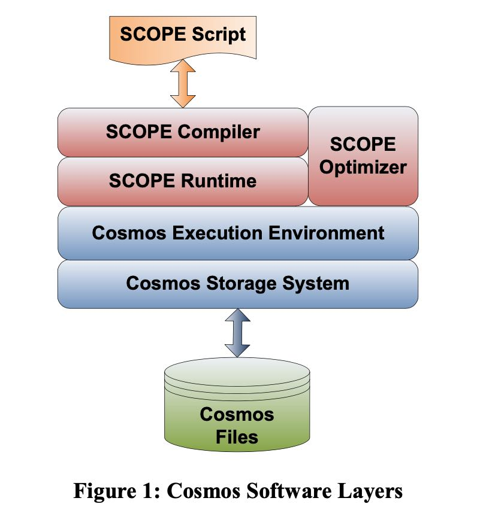
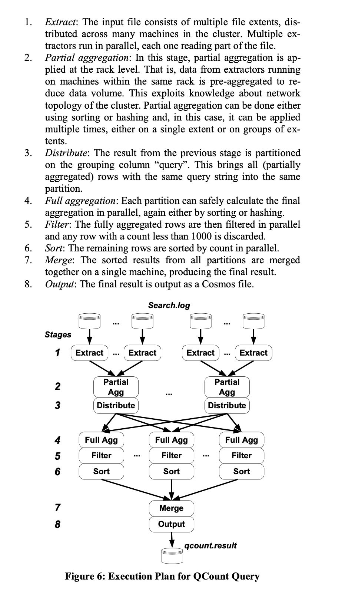

SCOPE Easy and Efficient Parallel Processing of Massive Data Sets
vldb2008. 年头有点久，现在看起来有点恍惚的感觉：SCOPE基本上就是SQL，然后把SQL编译成为Dyrad(MS分布式计算平台)的program. 那个年代大家受MapReduce影响比较大。现在看来SCOPE的开源系统就是Spark SQL, stage by stage执行方式，整个Plan也是变成了DAG来执行，不同的是Spark SQL完全使用了数据库已有的查询优化技术。
SCOPE(Structured Computations Optimized For Parallel Execution). Spark SQL是编译成为jvm bytecode, 而SCOPE是编译成为C# bytecode.
[!NOTE]
The SCOPE scripting language resembles SQL but with C# ex- pressions. This design choice offers several advantages. Its re- semblance to SQL reduces the learning curve for users and eases porting of existing SQL scripts into SCOPE. SCOPE expressions can use C# libraries. Custom C# classes can compute functions of scalar values, or manipulate whole rowsets.
COPE supports a variety of data types, including int, long, double, float, DateTime, string, bool and their nullable counter- parts. SCOPE uses C# semantics for nulls, which differs from SQL null semantics. Null compares equal to null. Null compared to a non-null value is always false. Null sorts high. The aggregates ignore nulls in SCOPE.
A script writer can view operators as being entirely serial; map- ping the script to an efficient parallel execution plan is handled completely by the SCOPE compiler and optimizer.

其实SCOPE也借鉴了数据库查询的优化技术比如partial agg, operator fusion. 只能说SCOPE算是那个时代的特定产物，how time flies!
